Our Process
Human Trafficking Interactive Exploration
Project Plan
This week, we have established our problem definition and performed some preliminary data research. The following illustrates the motivation of our project. The overarching goal of our project is to bring awareness to this issue in three primary ways:
- Visualize data related to the current human trafficking crisis, from the gravity of its victims’ exploitation (in quantitative and qualitative forms), as well as its international distribution.
- Visualize data corresponding to current efforts being expended to mitigate the negative effects of the human trafficking crisis, particularly government accountability and legislation indicators published by non-governmental organizations.
- Demonstrate, through a combination of data visualizations, textual descriptions, and a compelling website interface, that there is a strong impetus -- and way -- for all of us to participate in the fight against human trafficking.
Our preliminary ideas for sketches include the following:
Sketches
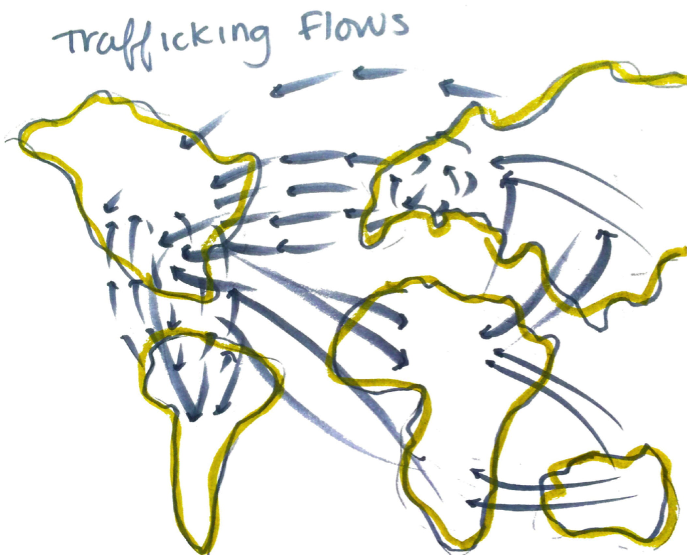 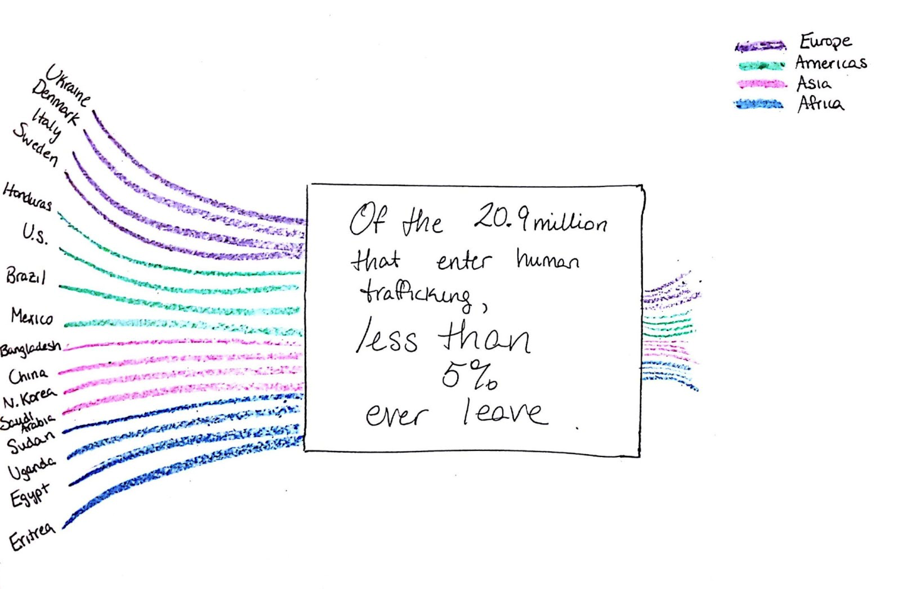 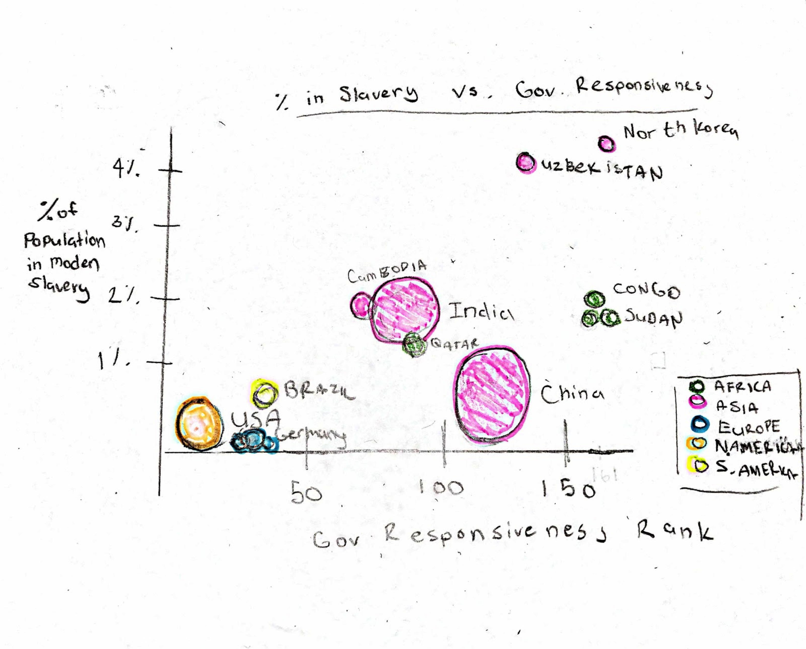
Interactions
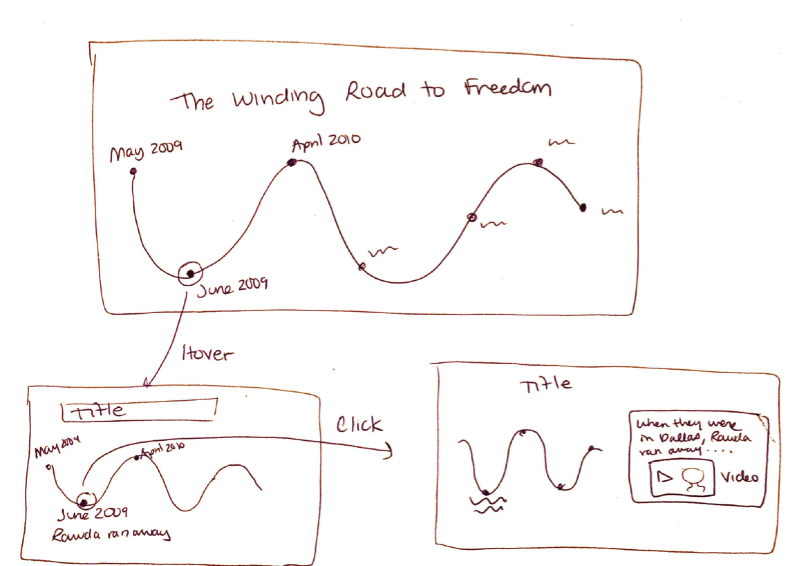
Webpage Layout
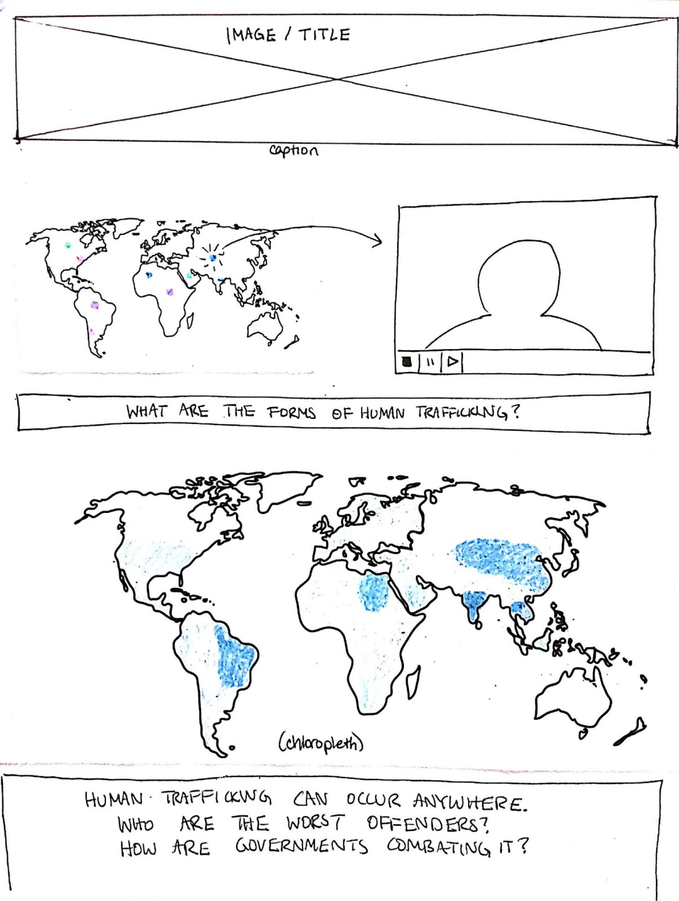 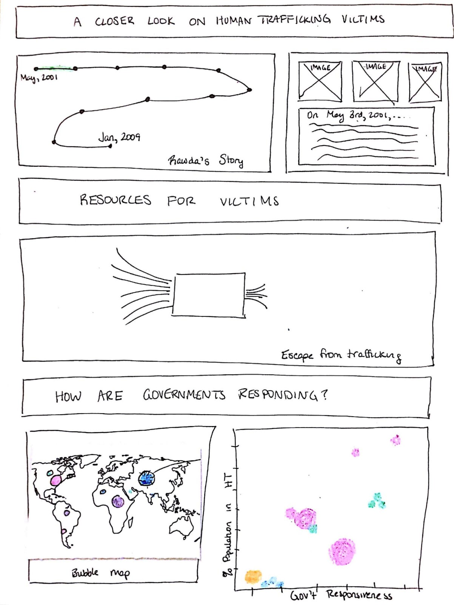
These visualizations offer a combination of geographic and non-geographic context surrounding human trafficking. One area we hope to elucidate in the upcoming week is: can we obtain time-series data regarding human traffic? To what extent can we implement visualization that represents data over time as opposed to at one particular point in time.
This week, we also signed the team expectations form and identified a role-playing rotational system: every week, after tasks and goals are set, we divide responsibilities between a Coordinator, Recorder, and Checker. This way, we can maintain accountability while ensuring that all tasks get completed with high quality and integrity. We will define particular features and implementations that should be completed that week along with the divisions of each roles. By the end of the project, the intention is for everybody in the team to have played every role at least once.
Finally, this week we developed a project timeline that matches the due dates prescribed by CS171 instructors with realistic goals in the context of our own visualizations. We will observe this timeline as closely as possible and make necessary adjustments as per our implementation progress between studios, labs, lectures, and time at home.
Prototype 1
This week, we made progress on the basic outline of our website as well some primary visualizations. The website currently has the following outline:
- First, we will explain to the viewer what human trafficking is, from the basic forms of exploitation to some contextual information behind why it exists and persists in the world today. 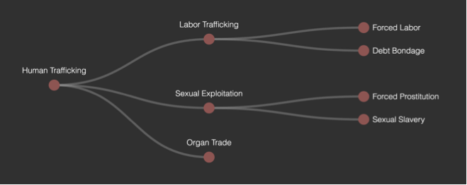
- Then, we will demonstrate to viewers how trafficking is a global problem, through a world globe interface visualizations. The globe will cycle through various countries of interest and show cases of particular trafficking victims, hereby introducing the storytelling element and guiding a viewer through the subjectivity of a human trafficking victim
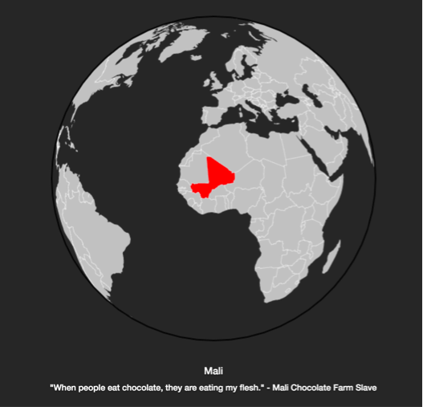

- We will then guide the user through a compelling visualization telling a story of what the numbers mean, placing and contextualizing emphasis on the gravity of the current crisis.
- Then, we will give an overview of what governments are currently doing to prevent the spread of this issue, through a scatter plot of general government responsiveness to % of trafficking victims in that country’s population. This scatter plot will be filterable by region. 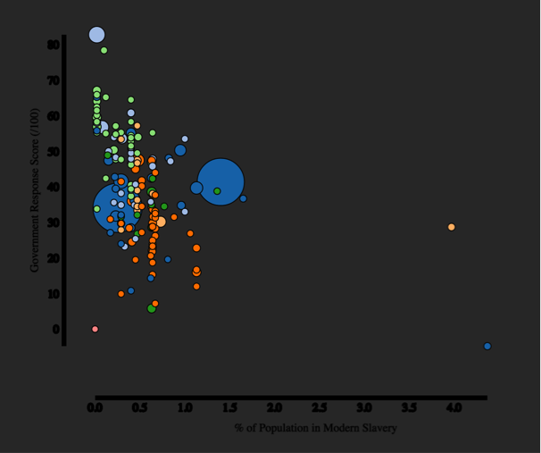
- Finally, we will include a section on what we can do to get involved in this issue. A d3 visualization may or may not be part of this section, however the call to action will be crucial in inspiring change for the viewer.
This week, we worked independently on various parts of the visualization and remain to work on a strategy for properly integrating our various changes. While Github seems to be a reasonable tool, simultaneously working on the index file while adding and subtracting elements will be a challenge we look forward to engaging with as the visualizations progress. Our communication channel remains constant over Slack and tasks will be well defined for the upcoming week on Tuesday.
Data-wise, we recently discovered a UN database of legal cases in human trafficking. While the proportions of cases from country to country don't really reflect where trafficking is the most prevalent, it does provide information on the demographics of individual victims -- things like age, country of origin, gender, etc. This would be difficult to scrape and aggregate, but it's something we could look into if we have a pressing need for data on trafficking victims.
Prototype 2
Our prototype is making strong progress, and we are confident that the data behind human trafficking is beginning to find a more meaningful presence on our website. At the moment, the basic structure of our website is as follows:
- We open with a title page and video that bring the viewer into the topic compellingly. We supplement this with a photograph depicting child labour with an introductory fact about the number of enslaved people worldwide.
- We then bring the viewer into an explanation of what human trafficking is from a definitional standpoint. In order to do this, we implement a bubble chart depicting the broad categories of sexual exploitation and labour trafficking, which encompass many more. 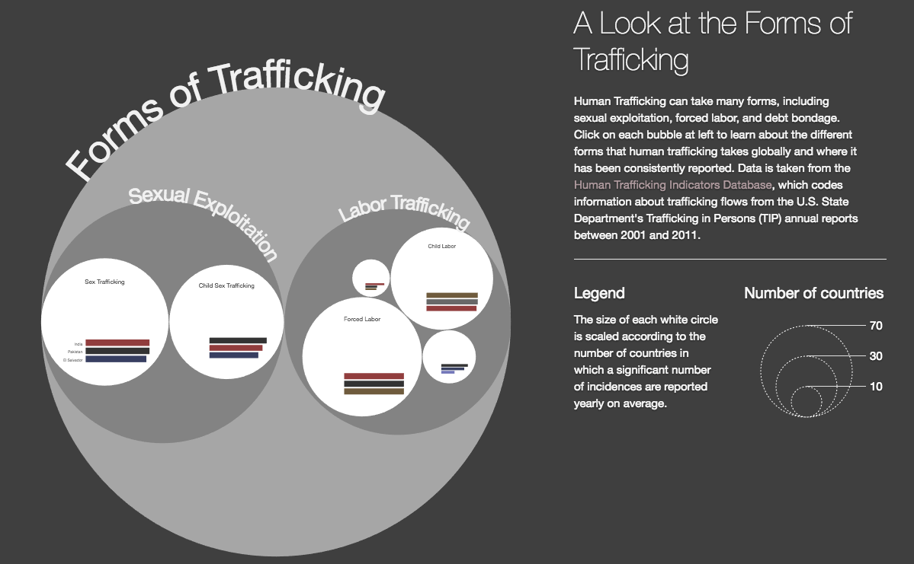
- Then, we demonstrate to viewers how trafficking is a global problem, through an interactive flow chart in which users can select one of 6 countries and see the trafficking flows emanate from that country on the world map. 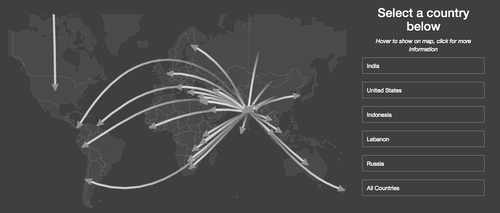
- We then alert viewers to the severity of the problem through a visualization representing the number of individually trafficked individuals according to 5 select countries. The user can filter how many are supported to exit as opposed to how many receive criminal justice responses. 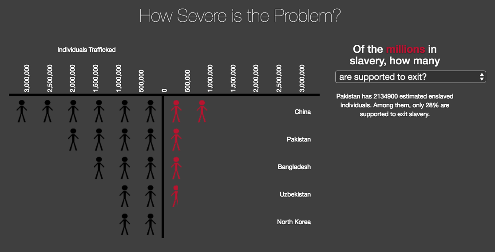
- We then take the viewer through a closer look at human trafficking victims with a world globe interface visualization. The globe cycles through various countries and shows cases of particular trafficking victims. 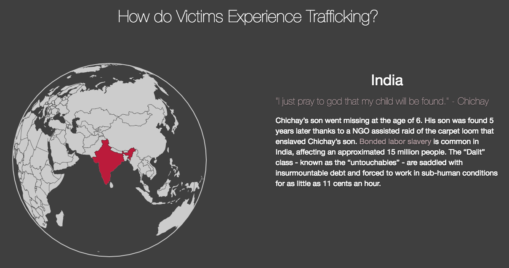
- Then, we will give an overview of what governments are currently doing to prevent the spread of this issue, through a chord diagram that represents the relative flow of trafficking victims from region to region. The effectiveness of that region's governments in mitigating the trafficking crisis is encoded color-wise, with a scale at the bottom representing the average effectiveness per region. Additionally, the chord diagram is filterable by region and an information pane on the right provides a summary of trafficking flows and government responsiveness per region. 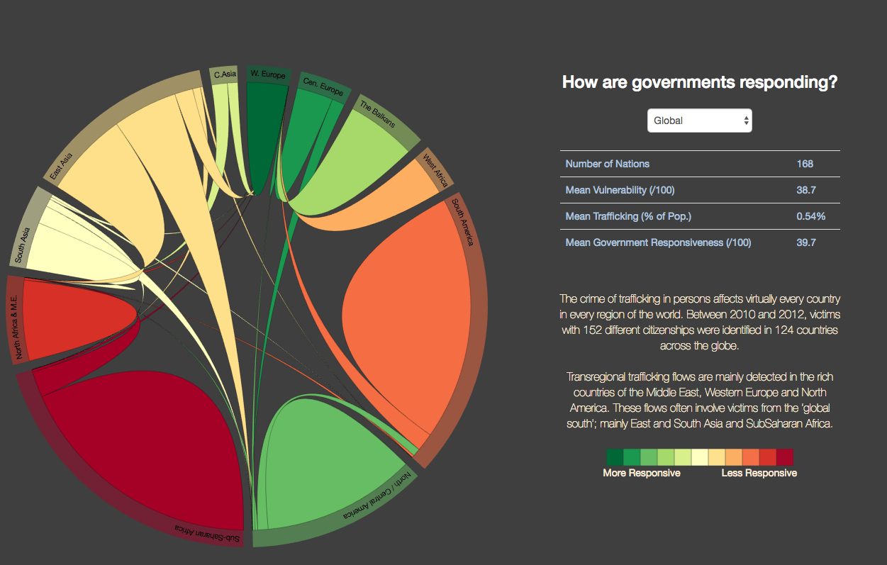 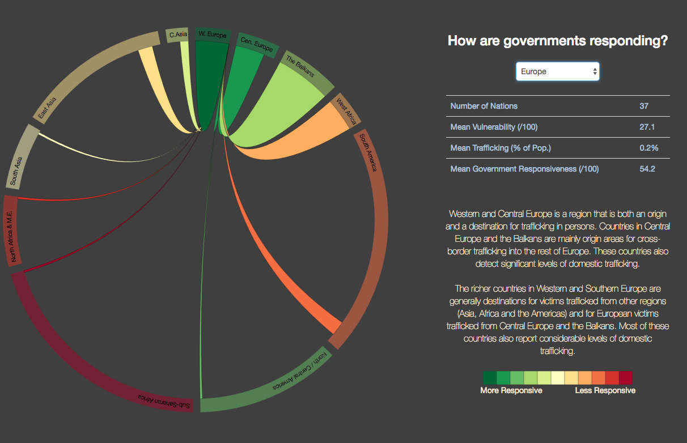
- Finally, we will include a section on what we can do to get involved in this issue. This section includes three calls to action: knowing how to spot the indicators, being a conscientious consumer, and being aware of human trafficking laws in your region. 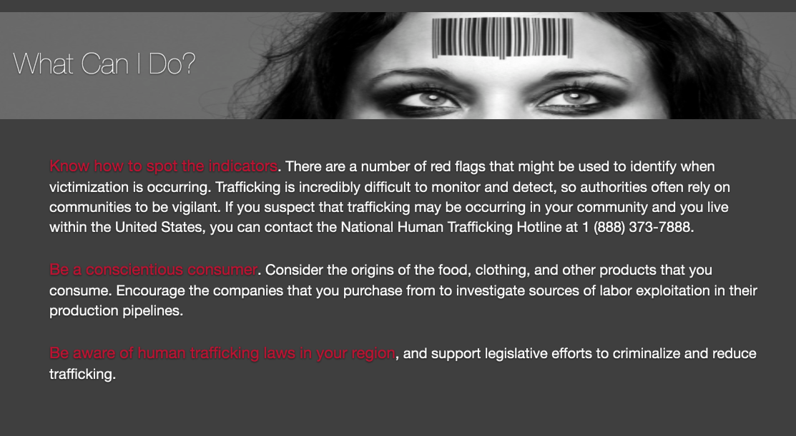
These past two weeks were very exciting and challenging, with the logistical hurdle of Thanksgiving and the need to make visualizations more interactive and data-driven. Our most drastic decisions for the second prototype were to replace the initial tree visualization and the scatterplot with the bubble graph and chord diagram respectively. These new visualizations were challenging to implement, as they involved the creation of two JSON-formatted objects that could be easily interpreted in D3. Our next steps for the final presentation will include further refining aesthetic choices on our website as well as ensuring that the information is accurate, and well documented. Most importantly, the "call to action" feature remains a critical portion that we hope will leave our viewers inspired to act.
Data-wise, we were able to obtain all the remaining information we needed from a United Nations Office on Drugs and Crime report entitled "Human Trafficking in Persons," last published in 2014. Although information was not readily available in tabular format, trafficking flows between regions and critical information on what governments are doing to respond to the crisis were gleaned from this report.
Final Project
We are very proud of our final product and are confident that our project has achieved its stated goal of raising awareness about the exigent human trafficking crisis, telling a meaningful story about the numbers behind this crisis, and inspiring users to take a action consciously and concretely. For this final process book entry, we would like to go over pieces of feedback we received during the live demo last week:
- Clarify arrows in flow diagram: Users during our demo were interested in the flow diagram, however many mentioned that it was confusing to distinguish flows from the given arrows in two situations: distinguishing outflow arrows from inflow arrows, and distinguishing between arrows in a cluster where many arrows point to an origin or destination country. In order to rectify this, we thinned the arrows and changed the color of the arrowheads to provide greater clarity. 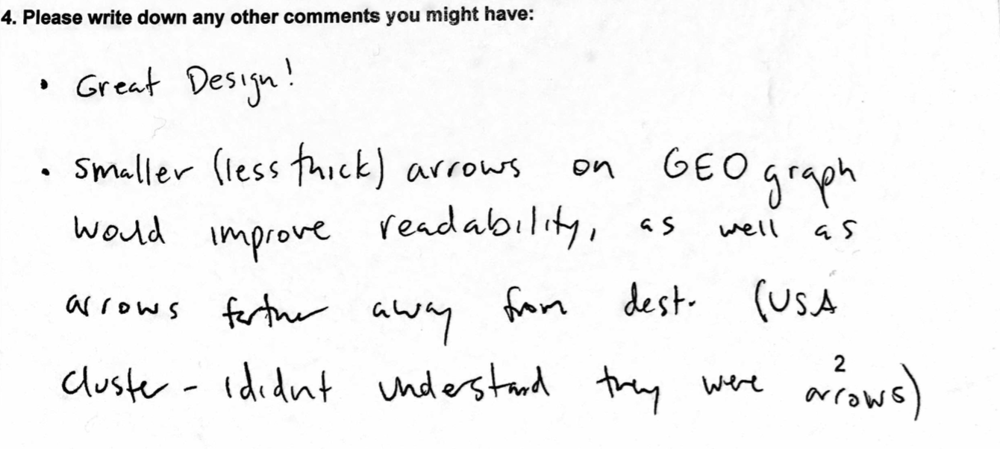 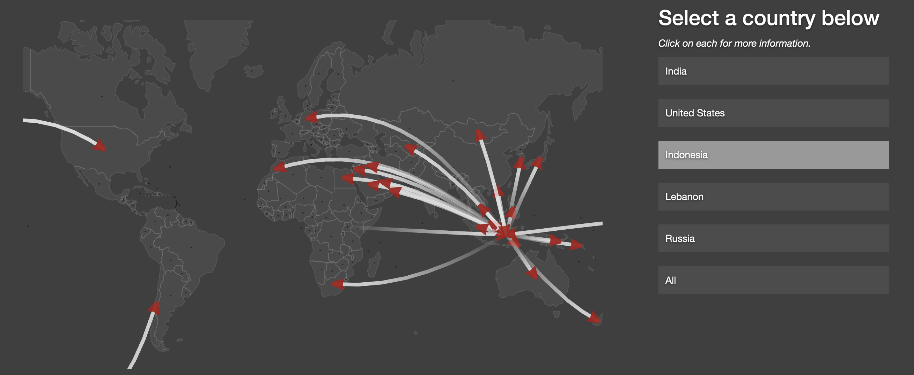
- Coordinated views for the chord diagram: Previously, our chord diagram was separated into two sections, one in which the chord diagram itself could be filtered regionally by hovering the mouse over different regions of the chart, and one in which the data could be filtered regionally by a dropdown menu. Many users stated that it would be more efficient and intuitive to have these views be coordinately, namely by hovering the mouse over the chord diagram to change outputted data in the right pane with no dropdown. 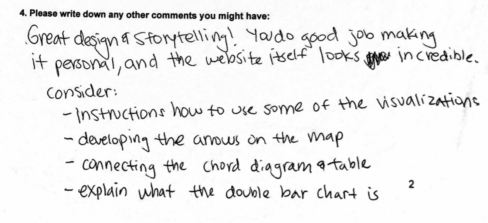 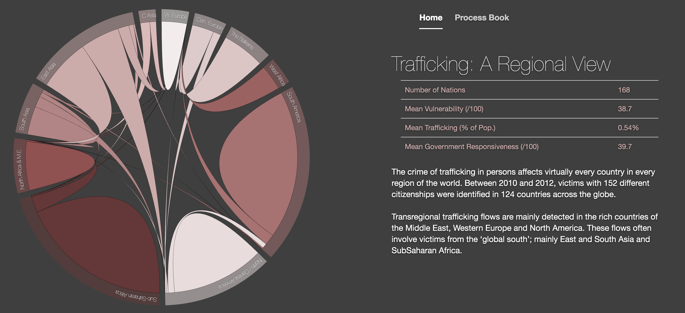
- Some positive feedback! We were very fortunate to receive lots of positive feedback throughout this process, especially related to the message we are trying to send users about the gravity of the human trafficking crisis as well as how important it is that we remain aware and involve. 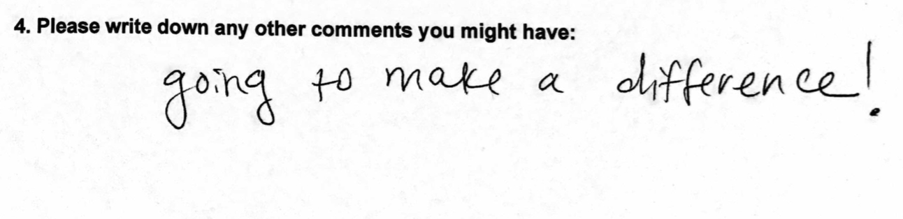
It has been a pleasure to work on this project!